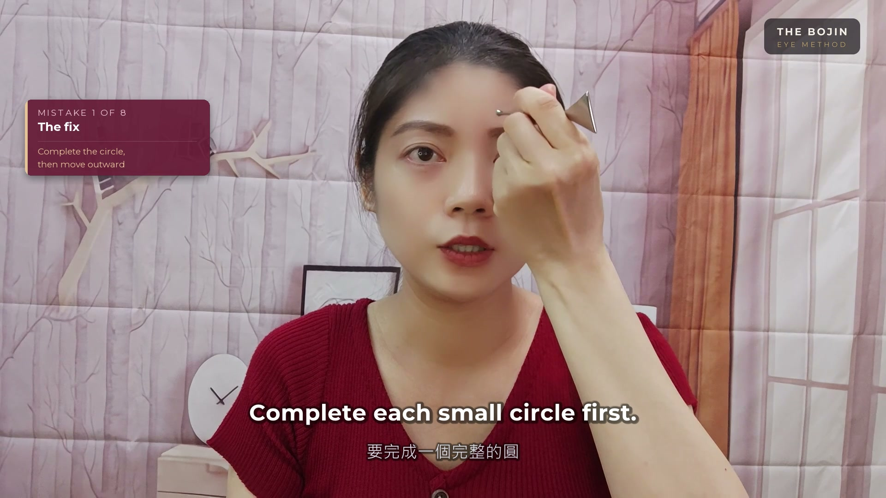

The Bojin Journal · Brows & Forehead
Forehead lines getting deeper? Separate the look from the feeling
Some days you notice your forehead in the mirror before you notice how it feels. A line looks stronger, and suddenly every touch becomes an attempt to smooth it away. You can pause that chase long enough to ask a more useful question: what am I noticing today?
Forehead lines and a held brow are not the same question. Separate appearance from sensation, then explore a local Bojin movement without a wrinkle-removal promise. Remember: this is a gentle, supported self-care observation you can test on one side of your face—never a forceful press or medical treatment.

What you see and what you feel are two different questions
A line looking more noticeable does not show that your forehead needs stronger pressure. It also does not prove that a muscle is stuck or that fluid needs to be moved elsewhere.
MedlinePlus lists normal aging, genetics, smoking, and sun exposure among contributors to wrinkles. A mirror cannot sort those factors for you. If changing the appearance of a line is your goal, that is a different conversation from learning the placement and control of a self-care movement.
A specific brow detail, rather than a general forehead reset
The guide linked here is about the brow region. It is not a full-forehead wrinkle routine. In the original lesson, a complete small circle above the brow comes before moving outward; it is not simply a long sweep toward the hairline.
That distinction is worth watching slowly. Look at the size of the movement, when the tool moves to a new place, and what the supporting hand does. These are details you can observe in the lesson without inventing a deeper tissue explanation.
What progress can mean while learning
For a viewing session, a useful result is being able to tell a circle from a sway. For learning the method, placement and hand coordination are questions to bring back to the complete teaching. Neither requires a before-and-after wrinkle claim.
A change in how an area feels, if one occurs, does not demonstrate collagen repair, extra product absorption, or a lasting change in appearance. More pressure and more repetitions are not evidence that you are learning the detail better.
Choose a next step that matches your question
If you want to understand the movement, open the comparison below. If your concern is a new skin change or you want options for persistent lines, discuss it with a qualified clinician. The video answers a technique question; it does not assess your skin.
You can also simply watch today. There is no need to turn every observation in the mirror into another task for your face.
Before considering practice
The course’s opening lesson excludes people with glaucoma, retinal problems, high myopia, or recent eye surgery. For recent eye-area injections or inflammation, follow the course’s advice to wait and consult your doctor first. The course also says to stop for sharp pain or visual changes.
Read the preparation and suitability reminders and the full course safety information before practising. These notes are not a complete medical screening.
Small Supported Circles vs Broad Swaying Along the Brow
Visual comparison of small, anchored Bojin circles versus unanchored swaying across the forehead and brow. This short excerpt is an observation preview, not a complete routine.
Quick answers
Are deeper-looking lines proof of forehead tension?
No. This article does not use the appearance of a line to diagnose tension or decide where to apply a tool.
Is the linked guide a full forehead-wrinkle routine?
No. It is a local brow guide with teacher excerpts and movement comparisons, not a treatment plan for forehead wrinkles.
Will a firmer pass work faster?
A visible line is not a reason to press harder. The course emphasises controlled movement and preparation; stop for sharp pain or visual changes.
What can I learn before practising?
You can watch for a complete small circle before the outward move and notice how the supporting hand participates. That is an observation task, not a prescription to start treatment.
Prefer the separate free demonstration?
Eye Reset is the free 3-minute Inner Brow Release demonstration. It is a local introduction, not the complete eye-area lesson or a full-face routine.
See the free 3-minute demonstration →Sources and scope
These sources provide general skin or eye-care context. They do not test or endorse Bojin. The movement description comes from Yu-Ting Lan’s original eye-area lessons; the linked guide shows selected excerpts.
Yu-Ting Lan is a Taiwan-based Bojin instructor and founder of Héhé Studio. Read about the teacher →